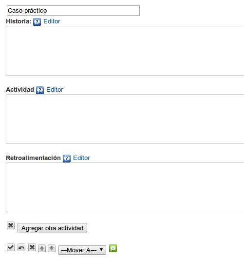

Caso práctico
Utilizaremos este iDevice preferentemente para proponer el estudio de un caso (real o imaginario) a partir del cual se proponen un conjunto de actividades con diferentes informaciones y orientaciones para su realización.
Al seleccionar el iDevice "Caso práctico" del listado de iDevices se nos mostrará lo siguiente en nuestro eXeLearning:

En la parte superior, tendremos la posibilidad de modificar el título del iDevice.
En el campo "Historia" escribiremos el texto a partir del cual nuestros alumnos harán las actividades.
En el campo "Actividad" les indicamos las instrucciones para realizar la actividad de lectura propuesta.
Por último, en el campo "Retroalimentación", incluimos aquellas informaciones e indicaciones que puedan servir de ayuda o complemento a nuestro alumno para realizar la actividad propuesta.
A diferencia del iDevice "Actividad de lectura", en "Caso práctico" podremos crear nuevas actividades con retroalimentación relacionadas con la historia inicial. Sólo tendremos que hacer clic en el botón Agregar otra actividad.
Recuerda:
En los iDevices con varias cajas de texto, puedes escribir directamente en ellas. Si quieres que se muestre el editor, tienes que hacer clic en el enlace "Editor" .
De esta forma la creación de actividades es más sencilla, rápida e intuitiva.
Ejemplo de caso práctico: El Bosón de Higgs
Hace unos meses, se anunció el que es considerado por algunos "el mayor descubrimiento científico de la historia": la demostración de la existencia del llamado Bosón de Higgs. Pero ¿Qué es exactamente el Bosón? ¿Por qué es tan importante este descubrimiento?
¿De qué estamos hecho? La partícula de Dios. Presentación de J. David en Prezi, Público y reutilizable
A partir de esta presentación, te proponemos que lleves a cabo tu propia investigación acerca de este tema a partir de unas actividades.
Búsqueda de información
Te pedimos que busques dos o tres páginas de Internet en las que se pueda encontrar información acerca del Bosón de Higgs: quién fue su descubridor, cuál es la teoría que presentó y dónde y cómo se ha demostrado finalmente esa teoría.
Exposición oral
A partir de la información obtenida en las fuentes que has consultado antes, tienes que preparar una exposición oral en la que expliques los aspectos esenciales acerca del tema que estamos trabajando. También puedes presentar las fuentes de información que hayas utilizado.
Practica eXe: Insertamos objetos multimedia
Realiza los siguientes procedimientos:
- Abre el archivo miarchivo2.elp que has creado en la actividad anterior (Puedes hacer doble clic sobre él).
- Crea un iDevice "Caso práctico" en el nodo "Insertamos objetos multimedia". Modifica el título.
- Busca en tu navegador una presentación de slidehare o prezi y copia su código "Embed".
- En el campo "Historia" escribe un texto intoductorio de la actividad.
- Haciendo uso del botón "Pegar fragmento de HTML (código embebido)", pega el código copiado. Pulsa el botón "Insertar"
- En el campo "Actividad" propón una tarea relacionada con el cotenido que has insertado. En el campo "Retroalimentación" incluye alguna información o recurso que sea necesario para llevarla a cabo.
- Añade otra actividad y complétala igual que la anterior: en el campo "Actividad" la propuesta de trabajo y en el campo "Retroalimentación" la información complementaria.
- Una vez terminado, haz clic en el botón
 para ver el resultado.
para ver el resultado. - Guarda los cambios. (Archivo > Guardar)
Si tienes alguna duda puedes consultar el siguiente vídeo:
eXeLearning. iDevice Caso práctico. Insertar Prezi. (CC by)
Obra publicada con Licencia Creative Commons Reconocimiento Compartir igual 4.0